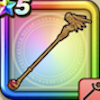

りゅうおうのつえ
攻略班 6.5点 / ドルマベギラママホトーンベギラゴンドルモーア※錬成で強化可能
くわしい特徴
【レベル別習得スキル】 Lv1ドルマ（消費MP：9）闇のチカラで敵1体にドルマ属性の呪文中ダメージを与える Lv10ベギラマ（消費MP：14）はげしい炎で敵全体にギラ属性の呪文小ダメージを与える Lv15マホトーン（消費MP：21）敵全体の呪文を封じる Lv20ベギラゴン（消費MP：20）敵全体にギラ属性の呪文中ダメージを与える Lv30ドルモーア（消費MP：18）破滅的な闇のチカラで敵1体にドルマ属性の呪文特大ダメージを与える Lv35物質系へのダメージ+5% Lv40ドルマ属性じゅもんダメージ+10% Lv45さいだいMP+12 Lv50こうげき魔力+12錬成スキル改1物質系へのダメージ+10%改2ドルモーア改（消費MP：20）さらなる破滅的な闇のチカラで敵1体にドルマ属性の呪文特大ダメージを与える改3物質系へのダメージ+10%改4錬成ぶき特別演出解放・メガモン討伐結果発表時に特別演出が追加・武器の見た目に特別なエフェクトが追加 【限界突破スキル】 1凸じゅもんダメージ+5% 2凸じゅもんダメージ+5% 3凸じゅもんダメージ+5% 4凸じゅもんダメージ+5%